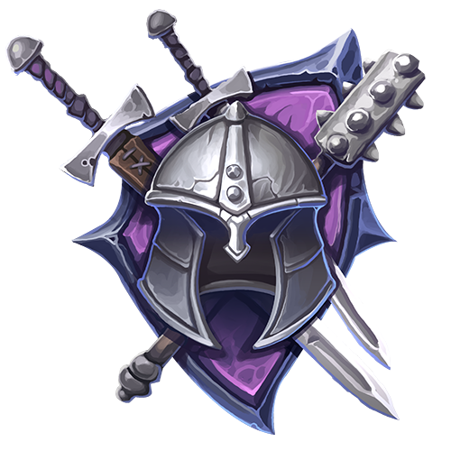
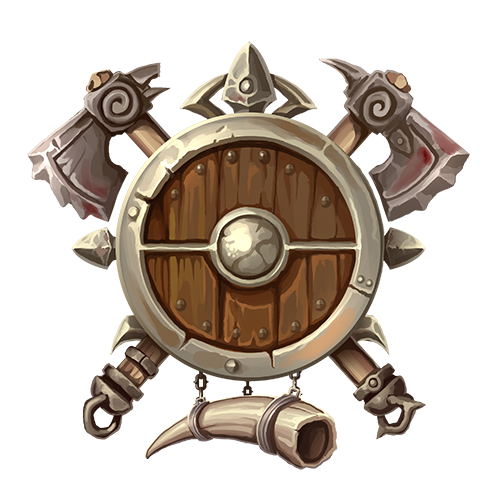
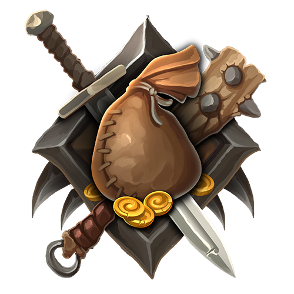
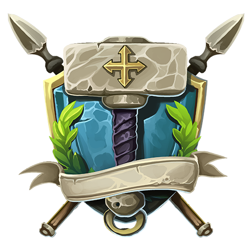

Déesse de la forge, la guerre, et l’ordre. Elle est représentée par une femme avec un casque argent et un bouclier pourpre. Elle représente la stratégie et les tactiques militaires. C’est à elle que les armées implorent des faveurs. Plusieurs paladins, guerriers et soldats la vénèrent également. On dit qu’elle serait la jeune sœur de Runel, elle est beaucoup moins pacifique et n’hésite pas à prendre les armes pour enrayer les détracteurs.
#Blaise

Dieu des tempêtes, de la guerre, de la mort et de la nature. Blaise est considéré comme le dieu le plus colérique du panthéon. Son signe est une hache ou un cor. Lors d’une bataille, les guerriers, paladins, moines ou barbares font résonner leurs cor de guerre et leurs cris pour s’assurer que Blaise les entendent et les voient. Il est réputé pour avoir un grand hall où les plus valeureux combattants se retrouvent pour festoyer après leur mort. Parfois, certains d’entre eux retournent pour guider les disciples de Blaise. On le représente par un grand homme barbu avec un casque cornu.
#Dhums
Dieu de la mort, des cimetières et du crépuscule. On raconte qu’il aurait pris la place d’Okomé dieu de la terre qui s’occupait de la mort avant. Dhums est souvent représenté par une faucille ou un tambour. On dit que quand la fin approche, on entend un son de tambour évoquant le nom de ce dieu. Il est vénéré autant par ceux qui aiment les esprits et les mort-vivants que par ceux qui les détestent et tentent de les détruire. Il représente également la beauté du cycle de la vie. Quand le soleil se couche on assiste à la levée de Dhums avec de belles couleurs. Il est également un présage du futur. Voyons voir ce que Dhums nous prépare pour demain.
#La lumière blanche
La lumière blanche représente la lumière, l’arcane, la vie et la paix. C'est une religion qui prône toute forme de lumière. Les disciples de La lumière blanche combattent farouchement le mal qu’ils appellent les ténèbres ou le néant. Malgré que La lumière blanche n’a pas de forme physique ou de personnalité, on dit que la lumière peut montrer la voie à suivre sous plusieurs formes et de façon plus claire que certains dieu. C’est une vieille religion qui avait perdu de son éclat mais qui revient en force avec l'arrivée des ténèbres. Ses cathédrales et monuments sont très imposants.
#Loubert

Dieu de la supercherie, de l'Arcane et de la guerre. Loubert est un dieu très ancien qui a plusieurs visages et plusieurs noms. C’est lui qui a élaboré le plan pour repousser les dieux des ténèbres. Il divisa leurs disciples en incorporant un de leur crédo à chacun des dieux de la lumière. C’est un des dieux les plus vénérés. Qui ne voudrait pas avoir la chance de son côté? La plupart des marchands, bardes, voleurs, mercenaires et aventuriers ne jurent que par lui. Il est souvent représenté par une pièce de monnaie. Dans les plus vieilles contrées, il est représenté par un doigt ou un X sur une bouche. D’ailleurs, il est parfois homme et parfois femme.
#Okomé
Dieu de la nature, la vie, les tempêtes et la lumière. Il avait d'autres rôles qu’il a cédé à certains de ses confrères. Okomé est le premier dieu, il a vu le jour lors de l'arrivée des premières créatures. Ces disciples sont parmi les plus tenaces. Il est souvent représenté par un cerf blanc avec deux panaches et quatre yeux. Il représente toute la nature qui nous entoure. Plusieurs druides, rôdeurs et voyageurs ainsi que les races plus vieilles représentent Okomé. Il est un dieu qui montre des signes sans jamais réellement parler à ses suivants.
#Runel

Déesse de l'ordre, la forge, la lumière et la paix. Runel est une déesse créée par le peuple nain au départ, lors de l’établissement des lois. Ces lois sont encore utilisées aujourd’hui. On représente Runel par un marteau ou la lance de la justice. La représentation physique de Runel change selon le peuple, parfois une ange aux cheveux longs, les yeux bandés; une naine au regard accusateur ou même une elfe en armure avec une lance qui pointe devant elle. On prête souvent serment devant elle. Runel représente également une fête lors du solstice d'hiver où l’on offrent des cadeaux aux autres. Partout dans les royaumes on nomme ce moment la fête de Runel.
#Le voyageur/se
Dieu ou déesse du crépuscule, des supercheries et des connaissances. Il ou elle est nouveau/nouvelle dans le panthéon. Le monde le ou la lie à La guilde marchande. On le ou la représente par une paire de bottes ou une cagoule. Il ou elle est de plus en plus reconnu(e) dans le panthéon. Bien qu’il ou elle n’a toujours pas de visage, ses fidèles le ou la respectent énormément. C’est une sorte de vision du futur où tout le monde s’entraide et travaille ensemble sans se fier aux idées préconçues. Souvent prêché par les voyageurs, les bardes et voleurs.
#Waltz
Dieu de la l’Arcane, de la connaissance, des cimetières et de la supercherie. Waltz était un magicien qui étudiait la magie et il avait plus d’un tour dans son sac. Il créa L’éveil qui changea les royaumes à tout jamais. Il sacrifia son essence vitale et devint une divinité à ce moment. Il est souvent représenté comme un oeil blanc ouvert qui observe et s’émerveille. La majorité des magiciens et savants le vénèrent, il représente les sciences de toutes sortes. Certains nécromanciens érudits le préfèrent également car il a plus de charme et de panache.
#Bahamut
Dieu de la lumière, de la vie et de l’ordre. Bahamut règne sur le plan matériel comme une force protectrice endormie. Plusieurs dragons font partie de son ordre. On raconte qu’il utilise sa force vitale pour garder son ennemi juré Tiamat dans un profond sommeil également. Il est dit que si l’un se réveille, l’autre suivra et le monde sera une fois de plus plongé dans les flammes de la guerre des dragons.
#Tiamat
Il est un des dieux endormi, il croit à la suprématie des dragons et selon lui toutes les autres races doivent se soumettre. Sa puissance est inimaginable et en fait l’une des plus grandes calamités qui existe toujours. Le grand désert de l’est est en grande partie causé par sa magie destructrice. Il est tombé dans l’oubli mais parfois on le cite en exemple pour faire peur aux enfants.